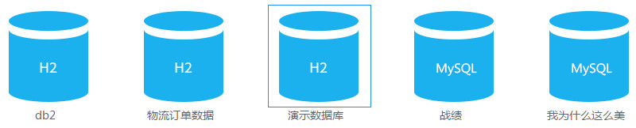
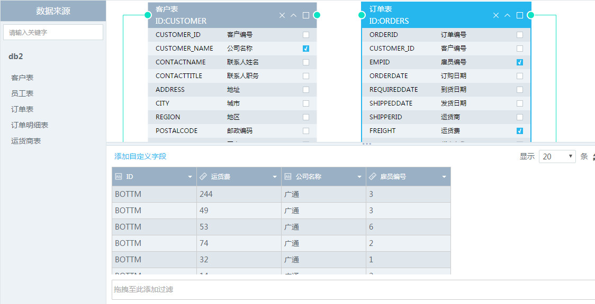
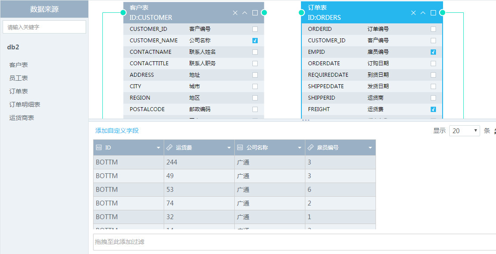
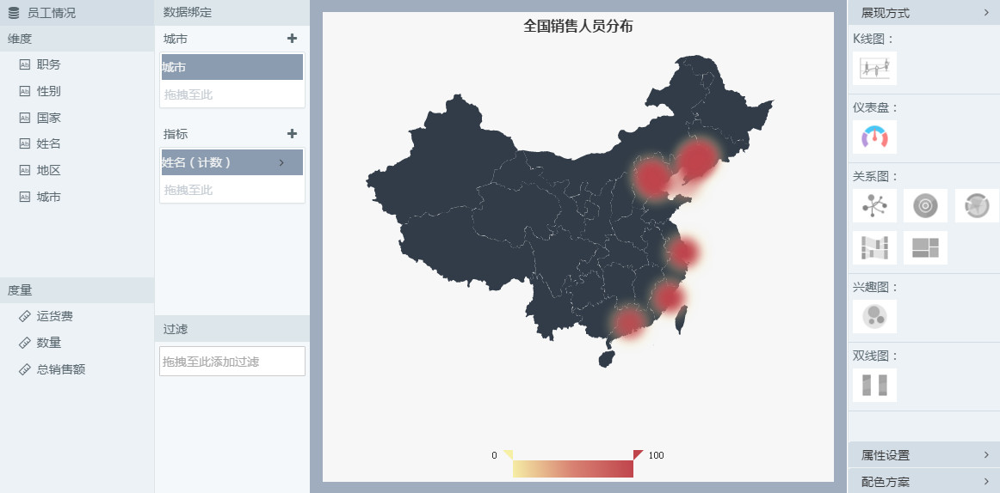
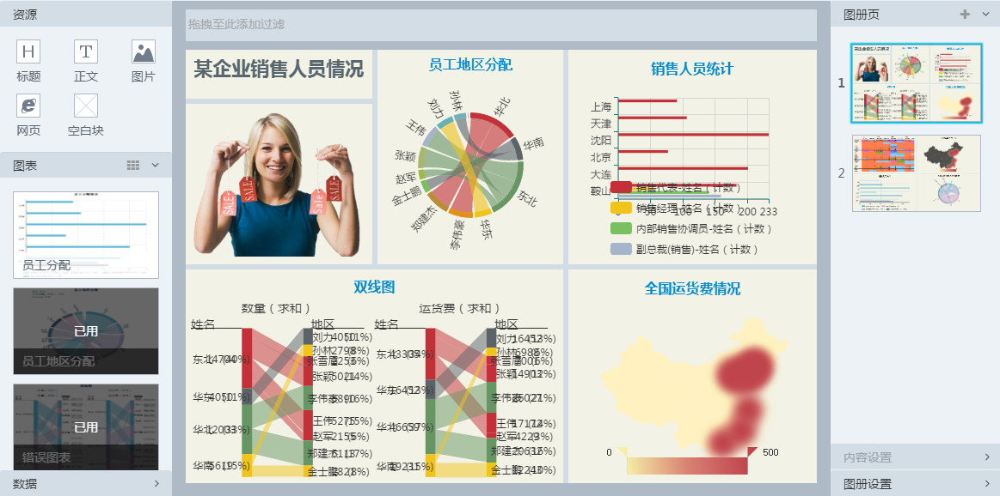
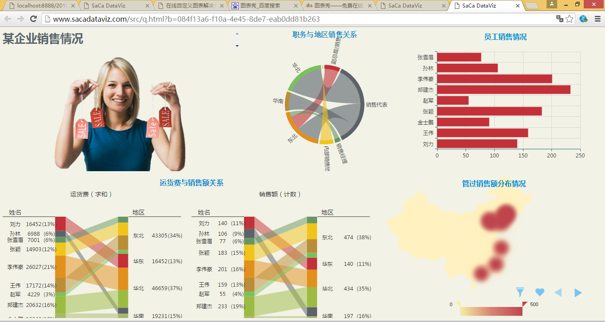

你好，根据你昨天说的需求，我上网搜寻了一下资料，想了一下，发现与图表网的在线可视化产品比较相近。
这个产品分三步建一个图册，建好可以预览
这个项目是用angularjs框架做的一个单页应用。
我想，可以参考这个项目，根据具体的使用场景做一些修改和优化，比如数据的导入接口，图表发布接口，图表的风格做适当的定制等...
（某企业员工销售情况 项目有数据）
这个项目是这样做的：
1、选择数据，建立数据之间的关系



2、使用已建立的数据，选择适合的图表类型，图表样式，自定义图表

3、对已建立的图表自由组合，增加附加信息，保存成图册

4、图册可以进行预览

有觉得不合适的地方，或者有什么想法意见，可以告诉我，我可以明天再想想改一改哈！
电话：13429146281 邮箱：380215444@qq.com
祝你周末愉快哈！